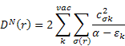
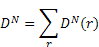
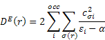
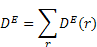
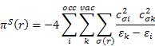
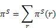

The nucleophilic and electrophilic delocalizabilities, the charge densities and bond orders are calculated and printed. These include the Mulliken electronegativity, the Parr and Pople absolute hardness, and the Schüürmann Molecular Orbital shift alpha quantities.
The superdelocalizabilities are calculated according to the method described in (A): Schüürmann, G. Env. Tox. Chem. (9), 417 (1990), and (B): Schüürmann, G. Quant. Struct.-Act. Relat. (9), 326 (1990).
In the MOPAC output, the various quantities are defined as follows:
Mulliken electronegativity =
-α,
where
α
=
the average of the HOMO and LUMO energies, i.e.,
α = ½(εhomo+
εlumo)
Parr & Pople absolute hardness = ½(εhomo-
εlumo)
Schuurmann MO shift alpha =
α.
Ehomo =
εhomo = energy of the Highest
Occupied Molecular Orbital, in eV
Elumo =
εlumo = energy of the Lowest
Unoccupied Molecular Orbital, in eV
Dn(r) and De(r) printed in the MOPAC output are described in (B) as follows: The nucleophilic and electrophilic delocalizabilities Dn(r) and De(r) of a reactants centre r according to Fukui et al. [1] and the respective total sums DN and DE can be defined within all-valence electron schemes [ 2] according to
 
 
q(r) - Z(r) is the charge density on each atom, i.e., the negative of the number of electrons on each atom. In formaldehyde, the oxygen has a partial charge, q(r), that is slightly negative, say -0.4. The core charge, Z(r), is 6, so the charge density is -6.4. That is, there are 6.4 valence electrons on the oxygen atom.
piS(r) is the self-polarizability πS(r) of an atom r. It was introduced as a reactivity measure for π electron systems by Coulson and Longuet-Higgins [3]; the all-valence electron formula can be defined according to:
 
The dimension of πS(r) is charge2/energy, which can be transformed to a volume dimension by multiplying with (length)2; for convenience the Bohr radius was chosen as the conversion factor in order to arrive at the same order of magnitude for πS(r) and πS for αvol.
The quantities below the line "a n homo-1 homo lumo lumo+1" are the percentage (%) contribution of the electron density on the various atoms to the four molecular orbitals.
[1] Fukui, K., Kato, H. and Yonezawa, T., Buff. Chem. SOC. Jup. 27, 423 -427 (1961).
[2] Schuurmann, G., Environ. Toxicof. Chem., 9,417 -428 (1990).
[3] Coulson, C.A. and Longuet-Higgins, H.C., Proc. Roy. SOC. (London) A 192, 16-32 (1947).